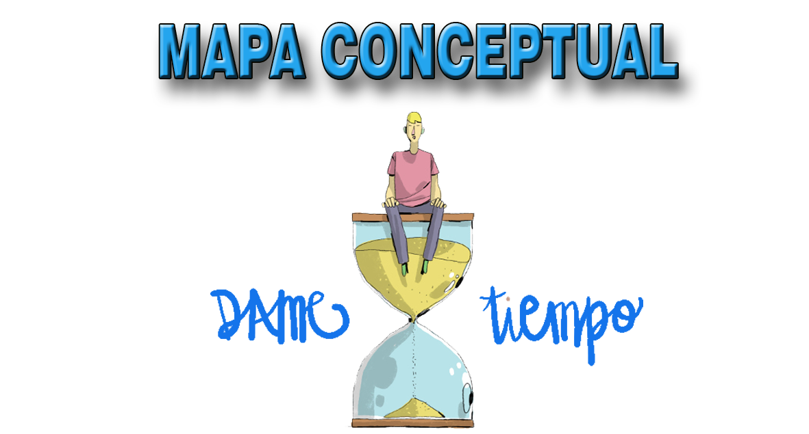
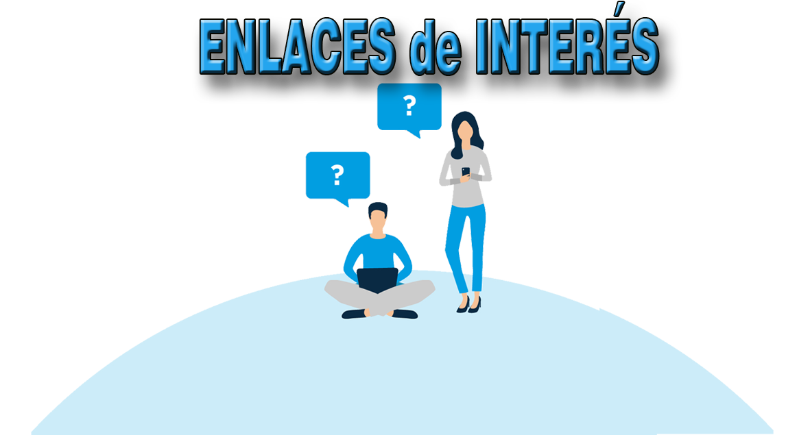

Banco de Tiempo
¿Qué es?
Un banco de tiempo es un sistema de intercambio de servicios o habilidades, en el que la unidad de intercambio no es el dinero habitual sino una medida de tiempo, por ejemplo, la hora.
Se trata de ofrecer un servicio a cambio de unidades de tiempo, es decir únicamente se contabiliza el tiempo invertido en el servicio prestado para acumular esa ganancia en la cuenta de la persona que lo presta y que podrá canjear después para recibir otra contraprestación.

Interfaz accesible
La aplicación WEB está pensada para que pueda ser usada por cualquier persona independientemente de sus capacidades técnicas, cognitivas o físicas.
La accesibilidad web se refiere a la capacidad de acceso a la Web y a sus contenidos por todas las personas independientemente de la discapacidad (física, intelectual o técnica) que presenten o de las que se deriven del contexto de uso (tecnológicas o ambientales).
Tablón de Anuncios
El tablón de anuncios es el corazón de la página, el expositor de todas las ofertas y demandas de los usuarios. Mediante el buscador el usuario puede localizar lo que necesita obtener (ofertas) o lo que el resto de usuarios podría necesitar de él (demandas).
Obviamente hay un formulario para que el usuario pueda ofrecer o demandar servicios. Una vez un usuario envía un anuncio, los datos del anuncio se suben al tablón en la categoría correspondiente, y será visible para todo el mundo.
Mapa Conceptual
El funcionamiento del banco de tiempo se basa en una lógica muy simple y ampliamente en la mayoría de negocios e-commerce. Habrá una Pasarela de pago interna y se emulará una pasarela de pago típica para gestionar la contratación de servicios y “pagar” con cargo a la cuenta correspondiente del Banco de tiempo. El usuario se registra, se le asigna una cuenta y deberá obtener saldo (tiempo) mediante prestación de servicios para poder contratar servicios de la comunidad.

Enlaces de Interés
La idea de un banco de tiempo no es nueva, ya existen numerosas iniciativas al respecto. Aquí presentamos una serie de links con información relevante al tema.
- Revista Digital: Banco de tiempo
- Banco de tiempo de Tenerife Guaydil
- Ministerio de Educación: Como hacer un Banco de Tiempo
